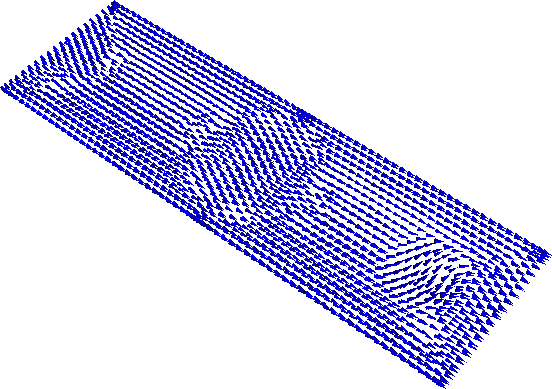

2.19. Example: Spin-waves in periodic system¶
Starting from a magnetisation out of equilibrium, we study the time development of the magnetisation, and track -visually- the spin waves.
The geometry is a thin film with dimensions 30 nm x 9 nm x 0.2 nm along the x,y and z axes, respectively. The mesh is centered at (0,0,0) and periodic along the x direction, so that the nodes with coordinates (15.0,y,z) will be considered as equivalent to the nodes with coordinates (-15.0,y,z).
The mesh is contained in periodic.nmesh and has been produced using Netgen (from periodic.geo) and the nmeshmirror command to create required periodic structure
$ nmeshmirror netgen.nmesh 1e-6 1e-6 -1,0,0 periodic.nmesh
2.19.1. Relaxation script¶
To see how the system relaxes, we use the following script (spinwaves.py):
import nmag
from nmag import SI
import math
# define magnetic material
Py = nmag.MagMaterial(name="Py",
Ms=SI(1e6,"A/m"),
exchange_coupling=SI(13.0e-12, "J/m"),
llg_damping = SI(0.02,"")
)
# lattice spacings along the main axes;
# the value must be zero for no periodic copies,
# equal to the mesh dimension along the
# given axis otherwise
x_lattice = 30.0
y_lattice = 0.0
z_lattice = 0.0
# list to store the lattice points where the periodic
# copies will be placed
lattice_points = []
for xi in range(-1,2):
lattice_points.append([xi*x_lattice,0.0*y_lattice,0.0*z_lattice])
# copies of the system along the x-axis
pbc = nmag.SetLatticePoints(vectorlist=lattice_points, scalefactor=SI(1e-9,'m'))
#create simulation object
sim = nmag.Simulation(periodic_bc=pbc.structure)
# load mesh
sim.load_mesh("periodic.nmesh", [("periodic-film", Py)], unit_length=SI(1e-9,"m") )
print ocaml.mesh_plotinfo_periodic_points_indices( sim.mesh.raw_mesh )
# function to set the magnetisation
def perturbed_magnetisation(pos):
x,y,z = pos
newx = x*1e9
newy = y*1e9
if 8<newx<14 and -3<newy<3:
# the magnetisation is twisted a bit
return [1.0, 5.*(math.cos(math.pi*((newx-11)/6.)))**3 *\
(math.cos(math.pi*(newy/6.)))**3, 0.0]
else:
return [1.0, 0.0, 0.0]
# set initial magnetisation
sim.set_m(perturbed_magnetisation)
# let the system relax generating spin waves
s = SI("s")
from nsim.when import every, at
sim.relax(save=[('averages','fields', every('time', 0.05e-12*s) | at('convergence'))],
do=[('exit', at('time', 10e-12*s))])
To execute this script, we call the nsim executable, for example (on linux):
$ nsim spinwaves.py
As in the previous examples, we first need to import the modules necessary for the simulation, define the material of the magnetic object, load the mesh and set the initial configuration of the magnetisation. Here, we start from a spatially non-homogeneous configuration in order to excite spin waves. Nmag allows us to provide a function to be sampled on the mesh that defines a particular magnetisation configuration.
In our case, we use the function
def perturbed_magnetisation(pos):
x,y,z = pos
newx = x*1e9
newy = y*1e9
if 8<newx<14 and -3<newy<3:
# the magnetisation is twisted a bit
return [1.0, 5.*(math.cos(math.pi*((newx-11)/6.)))**3 *\
(math.cos(math.pi*(newy/6.)))**3, 0.0]
else:
return [1.0, 0.0, 0.0]
which is then passed on to set_m
# set initial magnetisation
sim.set_m(perturbed_magnetisation)
2.19.2. Visualising the magnetisation evolution¶
Once the calculation has finished, we can see how the system relaxed by means of snapshots of the magnetisation evolution.
The nmagpp command allows us to create vtk files from the data saved with the save option in the relax method:
nmagpp --vtk=fields spinwaves
The first few frames that show the evolution of the magnetic configuration are shown below.

Initial magnetisation configuration.
Magnetisation configuration after 0.15 ps. It is clearly visible that the spin waves travel from the center of the disturbance to the right and penetrate the system immediately from the left (due to the periodic boundary conditions in the x-direction).

Magnetisation configuration after 0.25 ps.